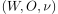
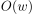
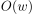
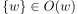

Sphärensystem zu einer Welt
1. Definition
Sei  ein Sphärenmodell und  Dann ist ein Sphärensystem zu
Dann ist ein Sphärensystem zu  , so dass gilt
, so dass gilt
- 
- ist durch
 linear geordnet
linear geordnet - ist abgeschlossen unter (nichtleeren) Vereinigung
- ist abgeschlossen unter (nichtleeren) Durchschnitt